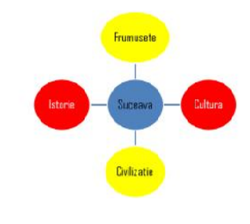

Fişa nr. 13
- Porniţi aplicaţia pentru prezentări, deschideţi o nouă prezentare şi inseraţi în aceasta nouă noi
diapozitive.
- Primul diapozitiv va fi de tip titlu şi va conţine titlul „Suceava, loc de popas”.
- Al doilea diapozitiv va fi de tip titlu şi text. Titlul – „Obiective turistice” va fi scris cu font Poor
Richard, culoare maro, dimensiune 54. Textul va conţine:
Ruinele Palatului Domnesc
Complexul Muzeal Bucovina
Muzeul Satului din Bucovina
Muzeul Ciprian Porumbescu
Muzeul Etnografic al Bucovinei
Parcul central
Muzeul de istorie
Casa de cultura
- Aplicaţi un efect de animaţie de tip Intrare – Romb titlului şi un efect de animaţie de tip Intrare –
Dezvelire marcatorilor de mai sus.
- În diapozitivul trei inseraţi un tabel ce conţine numărul de vizitatori estimaţi într-un an
calendaristic pentru obiectivele turistice enumerate mai sus.
- Folosind datele din diapozitivul precedent, adăugaţi în diapozitivul patru o diagramă de tip „Structura radială”. Titlu diagramei va fi Obiective turistice, al axei X – numele obiectivului şi al axei Z – numărul de vizitatori.
- Diapozitivul cinci va conţine o imagine potrivită cu titlul din diapozitivul 1 care va fi încorporata
în fundal. Adăugaţi apoi o casetă text ce va conţine textul „Oamenii au înfăţişarea locurilor în care
s-au născut”, scris cu fontul Castellar, culoarea galbenă, dimensiune 40.
- În diapozitivul şase inseraţi două butoane de acţiune. Primul face trecerea către următorul link
„http://www.turistik.ro/romania/suceava/obiective-turistice-suceava”, iar cel de-al doilea către ultimul diapozitiv.
- Inseraţi în diapozitivul 9, textul „Vă invită la SUCEAVA!” scris cu fontul Informal Roman, dimensiunea 60 şi stema Sucevei.
- În diapozitivul şapte inseraţi două gifuri animate despre un oraş.
- În diapozitivul 8 inseraţi un SmartArt – Ciclic de forma celui de mai jos.

- Adăugaţi fiecărui diapozitiv un fundal diferit (mai puţin diapozitivului 5) şi aplicaţi o tranziţie
aleatoare întregii prezentări.
- Salvaţi fişierul cu numele Suceava.